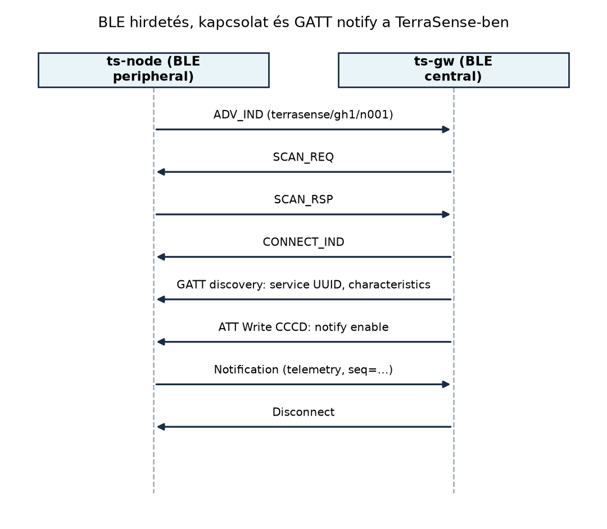

A Rádiós technológiák összevetése alfejezetben a TerraSense csomópont–gateway szakaszára a BLE mellett döntöttünk. A ts-node egy üvegházban, legfeljebb néhány tíz méterre van a ts-gw-től, és 10 percenként küld néhány száz bájt telemetriát. A klasszikus Bluetooth folyamatos kapcsolata és nagyobb fogyasztása felesleges lenne, a Wi-Fi pedig az energia- és költségkeretet feszítené szét. A BLE alacsony fogyasztása, olcsó moduljai és az okostelefonos provisioning lehetősége illeszkedik a TerraSense céljaihoz. Ebben az alfejezetben megtervezzük a ts-node BLE-interfészét: a hirdetésből a gateway felismeri a csomópontot, a GATT-szolgáltatáson keresztül pedig a telemetriát, az állapotot és a parancsokat cseréljük. Ez az interfész lesz a későbbi gateway-fordítás és az üzembe helyezés alapja.
Definíció. A Bluetooth Low Energy (BLE) a Bluetooth 4.0-tól bevezetett, alacsony energiafogyasztású rádiós technológia. A 2,4 GHz-es sávban 40 csatornát használ, ebből 3 hirdetési csatorna (37, 38, 39) és 37 adatcsatorna; a kapcsolatban frekvenciaugrást (adaptive frequency hopping) alkalmaz. A fizikai adatsebesség tipikusan 1 Mb/s, opcionálisan 2 Mb/s vagy kódolt PHY.
Definíció. A GAP (Generic Access Profile) határozza meg a szerepeket. A peripheral hirdeti magát, és GATT-szerverként szolgál ki; a central pásztázik, kapcsolatot kezdeményez, és jellemzően GATT-kliens. A broadcaster csak hirdet, az observer csak pásztázik, kapcsolódás nélkül. Ugyanaz az eszköz több szerepet is felvehet, de a TerraSense-ben a ts-node peripheral, a ts-gw central.
A hirdetés (advertising) során a peripheral periodikusan, a három hirdetési csatornán ADV_IND csomagokat küld. A hirdetési adat legfeljebb 31 bájt hasznos adatot tartalmazhat (legacy advertising), amely szolgáltatás-UUID-t, nevet, gyártói adatot vagy beacon-formátumot hordozhat. A central a SCAN_REQ/SCAN_RSP váltással további adatot kérhet, vagy kapcsolatot kezdeményez (CONNECT_IND). A hirdetési intervallum 20 ms és 10,24 s között állítható; a rövidebb intervallum gyorsabb felfedezést, de nagyobb fogyasztást eredményez.
A beacon-alapú telemetria azt jelenti, hogy az eszköz a hirdetési csomagban közvetlenül adatot sugároz, kapcsolat nélkül. Például a BTHome vagy az iBeacon/Eddystone formátum egy hőmérséklet-értéket is elhelyezhet a 31 bájtban. Ez energiatakarékos, mert nincs kapcsolatfelépítés, viszont nincs nyugtázás, nincs titkosítás, és a hirdetési csatornák torlódhatnak. A TerraSense telemetriája 200 B körüli, ezért nem fér el a legacy hirdetésben; a hirdetést felderítésre és jelenlétre, a tényleges adatcserét GATT-kapcsolatra bízzuk.
Definíció. A GATT (Generic Attribute Profile) az ATT (Attribute Protocol) fölé épülő keretrendszer. A GATT-szerver egy attribútumtáblát tart fenn; az attribútumoknak 16 vagy 128 bites UUID-ja, értéke és jogosultságai vannak. A GATT-kliens felfedezi a szolgáltatásokat, olvas, ír, vagy feliratkozik a notify/indicate értesítésekre. A notify esetén a szerver elküldi az új értéket, de nem vár alkalmazásszintű nyugtát; az indicate esetén a kliens visszaigazol. A TerraSense telemetriájához a notify elegendő, mert a seq mező és a későbbi MQTT-ingest idempotenciája kezeli az elvesztést.

A kapcsolat felépítése után a gateway feliratkozik a telemetria karakterisztikára. A CCCD (Client Characteristic Configuration Descriptor) írásával engedélyezi a notify-t, így a ts-node minden új mintánál értesíti a gatewayt. A parancsok a cmd karakterisztikán lefelé, a visszaigazolás a cmd_result karakterisztikán felfelé halad.
Biztonság: párosítási szintek röviden. A BLE párosítás célja a kapcsolat titkosítása és a felek hitelesítése. A LE Security Mode 1 szintjei: Level 1 – nincs biztonság; Level 2 – nem hitelesített párosítás titkosítással; Level 3 – hitelesített párosítás (pl. passkey); Level 4 – hitelesített LE Secure Connections. A társítási módszerek: Just Works (nincs felhasználói beavatkozás, sebezhető passzív lehallgatásra), Passkey Entry, Numeric Comparison és Out-of-Band. A TerraSense valós telepítésénél a node és a gateway közötti kapcsolatot hitelesített LE Secure Connections szintre állítjuk, különösen a cmd és a provisioning írásakor, mert a nyílt GATT-írás lehetővé tenné idegen parancs bejuttatását.
A hirdetés alapú és a kapcsolat alapú adatküldés közötti választást az alábbi táblázat foglalja össze:
| Szempont | Hirdetés (beacon) | GATT-kapcsolat |
|---|---|---|
| Előzetes kapcsolatfelépítés | nincs | van, néhány 10 ms–100 ms |
| Nyugtázás | nincs | ATT/alkalmazásszinten van |
| Hasznos adat legacy hirdetésben | ≤ 31 B | néhány száz B attribútumonként |
| Energia | alacsony, ha a hirdetési intervallum nagy | magasabb a kapcsolati események miatt |
| Késleltetés | hirdetési intervallum függvénye | a kapcsolat fenntartása, de notify azonnal |
| Tipikus alkalmazás | jelenlét, kicsi státusz, beltéri pozíció | telemetria, parancs, firmware |
A TerraSense-ben a hirdetést a felderítésre és a node jelenlétének
jelzésére használjuk; a hirdetési adatban a szolgáltatás-UUID és a
ts-node/gh1/n001 azonosító jelenik meg. A telemetriát, az
állapotot és a parancsokat GATT-on cseréljük, mert a 200 B-os telemetria
és a megbízhatósági igény ezt indokolja. A beacon-alapú telemetria akkor
lenne elegendő, ha a csomópont csak egyetlen hőmérsékletértéket küldene,
de a három szenzor és a szelep visszajelzése túl nagy.
Munkakönyvtár:
mkdir -p ~/iot-labor/i023 && cd ~/iot-labor/i023Előfeltétel: a Zephyr első alkalmazás projektváz ismerete. A labor a GATT-interfész specifikációját és egy Zephyr BLE peripheral vázát hozza létre.
Hozd létre a ~/iot-labor/i023/gatt-interface.md fájlt az
alábbi tartalommal. Ez a fájl a későbbi gateway-fordítás és provisioning
kiindulópontja.
# TerraSense GATT-interfész (i023)
Szolgáltatás neve: TerraSense Service
Szolgáltatás UUID: a3f4c8d1-2b6e-4f1a-9c3e-7d8a5b1e0f42 (illusztratív, 128 bit)
Karakterisztikák:
- Telemetry UUID: a3f4c8d1-2b6e-4f1a-9c3e-7d8a5b1e0f43
tulajdonságok: READ | NOTIFY
érték: telemetria bájtok; séma az i032 alfejezetben
- State UUID: a3f4c8d1-2b6e-4f1a-9c3e-7d8a5b1e0f44
tulajdonságok: READ | NOTIFY
érték: node állapot, pl. "online", "watering"
- Cmd UUID: a3f4c8d1-2b6e-4f1a-9c3e-7d8a5b1e0f45
tulajdonságok: WRITE | WRITE_WITHOUT_RESPONSE
érték: parancs, pl. {"cmd":"valve","state":"open"}
- Cmd Result UUID: a3f4c8d1-2b6e-4f1a-9c3e-7d8a5b1e0f46
tulajdonságok: NOTIFY
érték: parancs eredménye, pl. {"cmd_id":7,"result":"ok"}
- Provision UUID: a3f4c8d1-2b6e-4f1a-9c3e-7d8a5b1e0f47
tulajdonságok: WRITE | READ
érték: site/node konfiguráció, pl. {"site":"gh1","node":"n001"}
Biztonság: valós telepítésnél LE Secure Connections; a laborban nincs párosítás.A 128 bites UUID-k nem szabványosak, a laborhoz generáltuk őket. Valós termékben a gyártó saját regisztrált UUID-jait kell használni, hogy elkerüljük az ütközést.
Hozd létre a ~/iot-labor/i023/ts-node-ble/ projektet. A
src/main.c a GATT-szolgáltatást definiálja, és elindítja a
hirdetést.
#include <zephyr/kernel.h>
#include <zephyr/bluetooth/bluetooth.h>
#include <zephyr/bluetooth/gatt.h>
#include <zephyr/logging/log.h>
LOG_MODULE_REGISTER(ts_node_ble, LOG_LEVEL_DBG);
#define DEVICE_NAME "ts-n001"
#define DEVICE_NAME_LEN (sizeof(DEVICE_NAME) - 1)
#define ADV_INT_MIN 160 /* 100 ms */
#define ADV_INT_MAX 320 /* 200 ms */
/* Illusztratív TerraSense UUID-k, bájtsorrend ellenőrizendő a Zephyr makróhoz. */
#define TS_UUID_SERVICE BT_UUID_DECLARE_128(0x42, 0x0f, 0x1e, 0x5b, 0x8a, 0x7d, \
0x3e, 0x9c, 0x1a, 0x4f, 0x6e, 0x2b, 0xd1, 0xc8, 0xf4, 0xa3)
#define TS_UUID_TELEMETRY BT_UUID_DECLARE_128(0x43, 0x0f, 0x1e, 0x5b, 0x8a, 0x7d, \
0x3e, 0x9c, 0x1a, 0x4f, 0x6e, 0x2b, 0xd1, 0xc8, 0xf4, 0xa3)
#define TS_UUID_STATE BT_UUID_DECLARE_128(0x44, 0x0f, 0x1e, 0x5b, 0x8a, 0x7d, \
0x3e, 0x9c, 0x1a, 0x4f, 0x6e, 0x2b, 0xd1, 0xc8, 0xf4, 0xa3)
#define TS_UUID_CMD BT_UUID_DECLARE_128(0x45, 0x0f, 0x1e, 0x5b, 0x8a, 0x7d, \
0x3e, 0x9c, 0x1a, 0x4f, 0x6e, 0x2b, 0xd1, 0xc8, 0xf4, 0xa3)
#define TS_UUID_CMD_RESULT BT_UUID_DECLARE_128(0x46, 0x0f, 0x1e, 0x5b, 0x8a, 0x7d, \
0x3e, 0x9c, 0x1a, 0x4f, 0x6e, 0x2b, 0xd1, 0xc8, 0xf4, 0xa3)
#define TS_UUID_PROVISION BT_UUID_DECLARE_128(0x47, 0x0f, 0x1e, 0x5b, 0x8a, 0x7d, \
0x3e, 0x9c, 0x1a, 0x4f, 0x6e, 0x2b, 0xd1, 0xc8, 0xf4, 0xa3)
static uint8_t telemetry_data[] = {0x01, 0x02, 0x03}; /* placeholder */
static ssize_t telemetry_read(struct bt_conn *conn,
const struct bt_gatt_attr *attr,
void *buf, uint16_t len, uint16_t offset)
{
return bt_gatt_attr_read(conn, attr, buf, len, offset,
telemetry_data, sizeof(telemetry_data));
}
static struct bt_gatt_attr attrs[] = {
BT_GATT_PRIMARY_SERVICE(TS_UUID_SERVICE),
BT_GATT_CHARACTERISTIC(TS_UUID_TELEMETRY,
BT_GATT_CHRC_READ | BT_GATT_CHRC_NOTIFY),
BT_GATT_DESCRIPTOR(TS_UUID_TELEMETRY, BT_GATT_PERM_READ,
telemetry_read, NULL, NULL),
BT_GATT_CHARACTERISTIC(TS_UUID_STATE,
BT_GATT_CHRC_READ | BT_GATT_CHRC_NOTIFY),
BT_GATT_DESCRIPTOR(TS_UUID_STATE, BT_GATT_PERM_READ,
telemetry_read, NULL, NULL),
BT_GATT_CHARACTERISTIC(TS_UUID_CMD,
BT_GATT_CHRC_WRITE | BT_GATT_CHRC_WRITE_WITHOUT_RESP),
BT_GATT_DESCRIPTOR(TS_UUID_CMD, BT_GATT_PERM_WRITE, NULL, NULL, NULL),
BT_GATT_CHARACTERISTIC(TS_UUID_CMD_RESULT, BT_GATT_CHRC_NOTIFY),
BT_GATT_DESCRIPTOR(TS_UUID_CMD_RESULT, BT_GATT_PERM_NONE, NULL, NULL, NULL),
BT_GATT_CHARACTERISTIC(TS_UUID_PROVISION, BT_GATT_CHRC_WRITE | BT_GATT_CHRC_READ),
BT_GATT_DESCRIPTOR(TS_UUID_PROVISION,
BT_GATT_PERM_READ | BT_GATT_PERM_WRITE, NULL, NULL, NULL),
};
static struct bt_gatt_service ts_svc = BT_GATT_SERVICE(attrs);
static const struct bt_data ad[] = {
BT_DATA_BYTES(BT_DATA_FLAGS, (BT_LE_AD_GENERAL | BT_LE_AD_NO_BREDR)),
BT_DATA_BYTES(BT_DATA_UUID128_ALL, 0x42, 0x0f, 0x1e, 0x5b, 0x8a, 0x7d,
0x3e, 0x9c, 0x1a, 0x4f, 0x6e, 0x2b, 0xd1, 0xc8, 0xf4, 0xa3),
BT_DATA(BT_DATA_NAME_COMPLETE, DEVICE_NAME, DEVICE_NAME_LEN),
};
static void bt_ready(int err)
{
if (err) {
LOG_ERR("BT init failed: %d", err);
return;
}
LOG_INF("BLE initialized");
bt_gatt_service_register(&ts_svc);
err = bt_le_adv_start(BT_LE_ADV_CONN, ad, ARRAY_SIZE(ad), NULL, 0);
if (err) {
LOG_ERR("Advertising start failed: %d", err);
return;
}
LOG_INF("Advertising started");
}
void main(void)
{
int err = bt_enable(bt_ready);
if (err) {
LOG_ERR("bt_enable error: %d", err);
}
}A prj.conf:
CONFIG_BT=y
CONFIG_BT_PERIPHERAL=y
CONFIG_BT_DEVICE_NAME="ts-n001"
CONFIG_LOG=y
CONFIG_LOG_MODE_IMMEDIATE=yA CMakeLists.txt:
cmake_minimum_required(VERSION 3.20.0)
find_package(Zephyr REQUIRED HINTS $ENV{ZEPHYR_BASE})
project(ts-node-ble)
target_sources(app PRIVATE src/main.c)A BLE-stack nem fut teljes értékűen a szokásos
native_sim boardon, mert ahhoz nincs BLE-rádiómodell. A kód
fordítását native_sim-re az alábbi paranccsal
ellenőrizhetjük:
west build -d ~/iot-labor/i023/build -b native_sim ~/iot-labor/i023/ts-node-bleA futtatható állomány
~/iot-labor/i023/build/zephyr/zephyr.exe, de a BLE-rádió
hiánya miatt a hirdetés nem valódi. A teljes BLE-viselkedés valós
nRF52/nRF53 kártyán vagy BabbleSim-támogatással ellenőrizhető. Valós
kártya esetén:
west build -d ~/iot-labor/i023/build-nrf -b nrf52840dk_nrf52840 ~/iot-labor/i023/ts-node-ble
west flash -d ~/iot-labor/i023/build-nrfLinux oldalon a BlueZ segítségével pásztázhatunk:
bluetoothctl scan onA várt kimenetben megjelenik a ts-n001 nevű eszköz.
Csatlakozás után a bluetoothctl info vagy
list-attributes parancsa felfedi a TerraSense szolgáltatást
és karakterisztikáit.
A GATT-interfész működését három szinten ellenőrizzük:
BLE initialized és
Advertising started üzenetet naplóz. Ha a
bt_enable hibaüzenetet ad, a CONFIG_BT
hiányzik vagy a controller nem elérhető.bluetoothctl scan on listázza a ts-node-ot. Ha nem,
ellenőrizd a hirdetési adatot és az intervallumot; a
szolgáltatás-UUID-nak benne kell lennie az ad tömbben.bluetoothctl
connect után list-attributes mutatja a
karakterisztikákat. Ha a szolgáltatás hiányzik, a
bt_gatt_service_register sikertelen lehet, vagy a
karakterisztikák UUID-ja hibás.| Tünet | Ok | Javítás |
|---|---|---|
bt_enable -ENODEV |
Nincs BLE controller vagy nincs engedélyezve a stack | Ellenőrizd a prj.conf-ot; valós kártyán a BLE
controller legyen elérhető |
| A node nem látható a scan listában | Hirdetési adat üres vagy az intervallum túl nagy | Adj szolgáltatás-UUID-t és nevet az ad tömbböz;
csökkentsd az intervallumot |
| A karakterisztikák nem jelennek meg | A GATT service regisztráció hibás | Használj BT_GATT_SERVICE_DEFINE vagy ellenőrizd a
bt_gatt_service_register hívását |
| A gateway nem kap notify-t | A CCCD descriptor hiányzik vagy a kliens nem írta be a notify engedélyt | Győződj meg arról, hogy a karakterisztikához tartozik CCCD, és a gateway feliratkozott |
ISR-ből hívott bt_gatt_notify. A
BLE-stack függvényei nem hívhatók megszakítás-kontextusból, mert belső
szinkronizációt és memóriaallokációt használhatnak. A szenzor
megszakításkezelője csak jelezzen egy szálnak vagy work queue-nak, és a
notify-t abból küldjük.
Túl kicsi hirdetési intervallum. Az energiagazdálkodásnál gyakori hiba a 10–20 ms-os hirdetés állandó használata. A TerraSense 10 perces mintavételénél 100–200 ms hirdetési intervallum is elegendő a felfedezéshez, és a rádiós energia töredékét fogyasztja.
Nyílt GATT-írás a parancsokhoz. A cmd
karakterisztika write engedélye BT_GATT_PERM_WRITE
titkosítás nélkül lehetővé teszi, hogy bárki a hatótávon belül szelepet
nyisson. Valós rendszerben BT_GATT_PERM_WRITE_ENCRYPT vagy
BT_GATT_PERM_WRITE_AUTHEN szükséges.
A hirdetési adat és a GATT-karakterisztika összekeverése. A hirdetésben csak kis mennyiségű, nem titkosított adatot szabad elhelyezni. A telemetriát nem a hirdetési csomagba tesszük, hanem GATT notify-jal küldjük el a kapcsolat létrejötte után.
Fogalmi kérdés. Mi a különbség a GATT notify és indicate között, és miért elegendő a TerraSense telemetriájához a notify?
Számolási feladat. A ts-node legacy hirdetést használ 1 s intervallummal. Egy ADV_IND csomag küldése 376 µs-ig tart 1 Mb/s PHY mellett. Számítsd ki a hirdetési rádiós duty cycle-t, és becsüld meg az átlagos rádiós áramot, ha a TX csúcsáram 10 mA. Az eredményt illusztratívnak tekintjük.
Implementációs feladat. Egészítsd ki a labor
GATT-szolgáltatását egy Uptime karakterisztikával (UUID
a3f4c8d1-2b6e-4f1a-9c3e-7d8a5b1e0f48, READ | NOTIFY), amely
a node boot óta eltelt másodperceket adja vissza. Frissítsd a
gatt-interface.md-t is.
Hibakeresési feladat. A gateway sikeresen csatlakozik a ts-node-hoz, de a telemetria karakterisztika notify-ja nem érkezik meg. Sorold fel a lehetséges okokat, és add meg a javítás lépéseit.
A notify esetén a szerver elküldi az új értéket,
de a kliens nem küld alkalmazásszintű visszaigazolást; az
indicate esetén a kliens ATT-választ küld minden
értesítésre. A notify gyorsabb és kisebb forgalmú, de egy értesítés
elveszhet. A TerraSense telemetriája 10 percenként érkezik, a csomagban
seq sorszám van, és az MQTT-ingest a Ingest: MQTT-ből a backendbe, idempotensen
alfejezetben idempotensen fogadja a duplikátumokat, ezért a notify
elegendő. A indicate akkor lenne indokolt, ha minden egyes értesítés
megbízható kézbesítése alkalmazásszinten is kritikus lenne, és a lassabb
nyugtázás nem jelent problémát.
A duty cycle:
Az átlagos rádiós áram:
Ez illusztratív, mert a valós átlagot az alvóáram, a hirdetési csatornák közötti időzítés és a rádió felébredési ideje is befolyásolja.
A Uptime karakterisztika hozzáadása a
gatt-interface.md-hez, majd a Zephyr kódban:
#define TS_UUID_UPTIME BT_UUID_DECLARE_128(0x48, 0x0f, 0x1e, 0x5b, 0x8a, 0x7d, \
0x3e, 0x9c, 0x1a, 0x4f, 0x6e, 0x2b, 0xd1, 0xc8, 0xf4, 0xa3)
static uint8_t uptime_value[4]; /* uint32 másodperc, little-endian */
static ssize_t uptime_read(struct bt_conn *conn,
const struct bt_gatt_attr *attr,
void *buf, uint16_t len, uint16_t offset)
{
uint32_t uptime = k_uptime_get() / 1000;
sys_put_le32(uptime, uptime_value);
return bt_gatt_attr_read(conn, attr, buf, len, offset,
uptime_value, sizeof(uptime_value));
}A táblában a State után:
BT_GATT_CHARACTERISTIC(TS_UUID_UPTIME,
BT_GATT_CHRC_READ | BT_GATT_CHRC_NOTIFY),
BT_GATT_DESCRIPTOR(TS_UUID_UPTIME, BT_GATT_PERM_READ, uptime_read, NULL, NULL),A sys_put_le32 a Zephyr byteorder API része; az aktuális
include ellenőrizendő (zephyr/sys/byteorder.h). A
gatt-interface.md-ben rögzítsd az új UUID-t és a
tulajdonságokat.
| Ok | Javítás |
|---|---|
| A gateway a GATT felfedezés után nem írta a CCCD descriptorba a notify engedélyt | A gateway klienskódjában engedélyezze a CCCD-t: 0x01:00
notify, 0x02:00 indicate |
| A telemetria karakterisztikának nincs CCCD descriptorja | A GATT definícióban a karakterisztikához tartozzon
BT_GATT_CCC descriptor |
A ts-node nem hívja a bt_gatt_notify-t |
Ellenőrizd, hogy a telemetria szál periodikusan küld notify-t, és a paraméterek helyesek |
| A kapcsolat megszakad a notify előtt | Hosszabbítsd a kapcsolati időtúllépést, vagy a gateway tartsa fenn a kapcsolatot |
A TerraSense ts-node BLE peripheral, a ts-gw BLE central. A node
hirdetésben jelzi a jelenlétét, a szolgáltatás-UUID-ját és a nevét; a
kapcsolat létrejötte után a GATT-szolgáltatáson keresztül cserél adatot.
A hirdetés alapú beacon kevés, nem nyugtázott adatot szállít, míg a
kapcsolat alapú GATT notify megbízhatóbb és nagyobb hasznos adatot
enged. A laborban definiáltuk a TerraSense GATT-szolgáltatást
(~/iot-labor/i023/gatt-interface.md), a 128 bites UUID-kkal
és a telemetry, state, cmd, cmd_result, provision karakterisztikákkal. A
Zephyr váz (~/iot-labor/i023/ts-node-ble/) a szolgáltatás
definícióját és a hirdetés indítását mutatja. Ezt a GATT-interfészt
használja a ts-gw protokollfordítás és az üzembe helyezés alfejezet.
BT_UUID_DECLARE_128, a
BT_GATT_SERVICE, a bt_gatt_service_register és
a bt_le_adv_start pontos szintaxisa, valamint a
native_sim BLE-támogatása.bluetoothctl parancsok pontos viselkedése.native_sim board BLE-támogatása és a BabbleSim
integráció az aktuális Zephyr kiadásban ellenőrizendő; a labor ezért a
BLE-rádiós működést valós kártyán vagy BabbleSim-környezetben
javasolja.